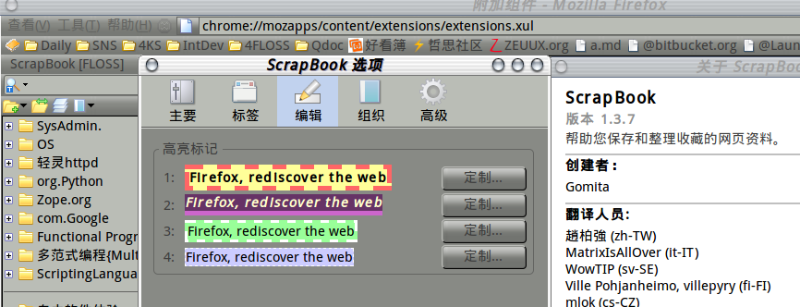
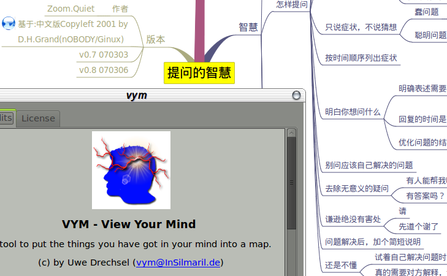
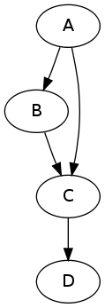
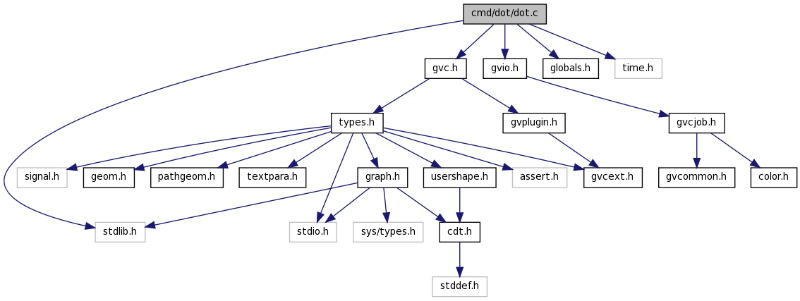
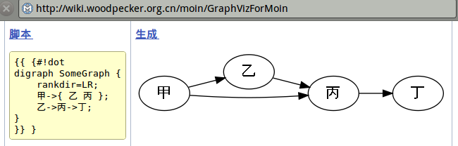
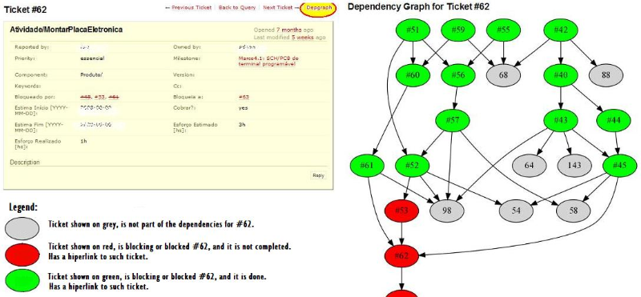
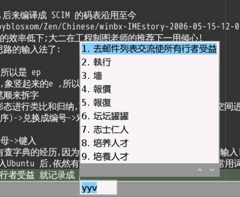
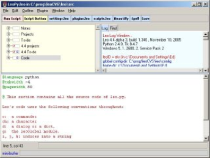
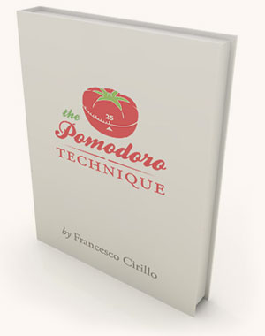

我的工具箱
应老刘之邀分享一下个人日常效率工具，但是，吾之膏腴彼之毒药！真不知读者尝试后会有什么后果。所以，得先声明一下，以下经验皆为个人体验，未经任何有关部门认证，请读者自行判定是否靠谱。
对于俺，工具的选择与组合这是持续将近14年的连续过程，很艰难地才算形成一点当前的原则，先唠叨一下，是否获得认同另说，只是强调所有工具都不是孤立存在于个人工具箱的，而是作为整体服务于俺的生活/工具领域，选择标准如下：
1. 尽可能是FLOSS/跨平台/开发社区活跃
2. 尽可能有多种或是标准化的输出格式(有 txt/html 最好)
3. 尽可能有命令行界面/接口(以便通过管道和其它事务连接起来)
4. 尽可能有完备的快捷键支持(如果是GUI的)
5. 安装/升级/备份都简单/可靠(绝对无法容忍重装系统所有配置就得重新再配的杯具! )
工具只要吻合两条以上就很善哉了。
现在想来对于工具好象是追求：MOO（ Muscle Oriented Operating，面向肌肉的操作）。即使用不应该依赖眼睛/鼠标等额外条件干扰，仅仅键盘操作就可以达到目标，毕竟每次从鼠标定位/菜单操作中节省的零点几秒时间，在日常大量操作积累后，就是一可观的收获了。而且形成肌肉记忆后，将不断的加强，不会因为环境的变化而失效，这样的工具才是终身受用的！当然，必要前提就是操作在键盘上是有固定的位置/组合的，显然鼠标是不可能形成肌肉记忆的－－不要说鼠标手势，这东西消耗的功率是键盘的几倍，俺也不想得鼠标手。下面根据自个儿非常的生产活动主要环节，来说明选用的工具组合：
import
首先是一切的起点，输入活动，当前，基本上信息输入都是电子化的了，图书已经末落。电子化的信息输入，又最多的来自互联网。互联网信息，最多的形式又是网页，所以，对于俺最重要也最随手的就是网页的收集管理。 ScrapBook就是这样一种火狐浏的插件工具。俺最初是使用分类目录收纳，但问题在于无法快速定位想看的，即使后来动用了桌面搜索也不方便；后来尝试过各种个人知识库软件（Mybas，KnowledgeTree，Tubo，Onenote）。主力浏览器迁移到火狐后，也体验过资料管理器Zotero，都难以达到功能/性能/管理三者均衡，最终还是坚持了ScrapBook。它的爽直在于和火狐自然配合的使用最简单轻便的网页管理工具，仅用右键点选（当然的可以通过keyconfig之类快捷键定义插件来绑定键盘操作）菜单即刻抓取指定内容到本地，并组织到指定的分类中，同时提供足够可用的搜索/再编辑/导出/导入等实用功能。使用至今，收集了近4万页面，超过5G体积，打开/搜索/定位本地页面内容，居然也从来不慢。索引使用rdf非常标准的数据格式，方便进行各种二次处理。确保好文章在第一时间先抓取到本地，不依赖原文网站，可以随时翻阅！可以自动输出网站样HTML索引页面，俺个人网站的资料分享（http://floss.zoomquiet.org）就是直接使用这一功能发布的，需要注意的是，一定要有比较稳定和精简的知识体系分类，自个儿对任何一技术领域的资料，可以习惯性的完成分类和安置，这才在日后能够随时快速查询到。
think
然后是面对大量资料的再整理/重构/思考阶段，自然的，俺也使用思维图谱。最早接触到思维图谱是03年了，当时还以为只有手绘的才是思维图谱，后来知道了Freemind，进行了会议记录,程序设计,讲演备稿等尝试后,理解了什么是“思维图谱”这才开始继续追寻好用的思维工具。
Freemind是最常见的跨平台图谱工具，使用JAVA创建，缺点是慢，中文支持诡异，数据格式很规范～XML的，可以用XLS等工具，脱离Freemind进行二次处理／展示；但是在Ubuntu7.04时期，Freemind
为何支持中文后反而弃用?
- 高松 ~ ZQ:后段说明了,因为输出格式不标准.HTML图片不可直击跳转 例如 http://www.woodpecker.org.cn/
- sheishigaosong
中文完全杯具（主要是JAVA的配置问题），只好开始使用vym（ViewYouMind），这
为何支持中文后反而弃用?
- 高松 ~ ZQ:后段说明了,因为输出格式不标准.HTML图片不可直击跳转 例如 http://www.woodpecker.org.cn/
是Ubuntu软件库中包含的图谱工具，基于Qt开发，速度快，中文支持，就是快捷键不好用。但是在8.04时期，中文支持的情况又倒转了，只好放弃，用回FreeMind,但是已经对JAVA实现的FreeMind在复杂图谱中超肉的反应，以及不时的意外崩溃，丢失所有输入无法忍受了，开始尝试各种图谱工具，记有:
网络化思维导图工具CmapTools，能强大，但是中文/速度，都是个磨难，只好放弃;
JUDE 也是Java实现UML工具，非常的专用，其它情景无法借用；Dia号称可代替Visio，但是真的很丑，而且操作很个性，也没有什么快捷键，无法提高效率；yEd是轻型的图谱工具，性能/功能/输出都很好，就是中文支持费劲，接受中文，输出正常，但是在界面中是乱码；特别的，对于图谱的发布，很需要直接输出可点击的HTML页面以便快速发布到互联网，但是体验过的图谱工具，只有CmapTools和yEd的输出有能力在图片上部署URL热区！
- sheishigaosong
Freemind非要跳转到下方的HTML文字链接树中才能继续点击进入真正的网址，真是奇怪的实现方式（当然Flash格式的输出是可以的，但！俺是Flash反感者）
以上我理解为对所使用过的思维导图工具进行比较，不妨说明一下 - 高松
。现在逐渐统一使用Graphviz，这是WYTIWYG的经典作品，通过编辑.dot图形脚本来记录思维，用Graphviz提供的各种工具(比如说命令:dot)输出图形来展示思维，达到了禅样的高度，而且可以输出图片热区定义MAP文本，自然部署到HTML中成为可点击图片。
比如:编辑一文本 foo.dot
digraph AnotherGraph {
A->B;A->C;
B->C->D;
}
然后在命令行使用 dot -Tpng foo.dot -o foo.png 命令就可以得到 foo.png
更加NB的是 Graphviz 可以集成到各种工具中融入日常工作！例如：在文档化开发注释提取规范和工Doxygen中就内置了 Graphviz 来对代码的类关系进行图形化展示， Graphviz自个儿的代码就使用 Doxygen 进行了自动化注释文档管理，比如说：dot.c 文件的关系图谱；
与Graphviz的关系如何呢 - 高松
在维基引擎MoinMoin 中,因为是用 Python 开发拥有自在的扩展能力,配合插件就可以直接在维基页面中书写 dot 文本而直接就地收获图谱；在轻巧的项目和配置管理系统Trac(也是Python 实际),通过插件,使用 Graphviz 自动输出传票任务的关系图谱。
综上,以往的图谱工具都是GUI界面的,都需要鼠标,操作,依然强迫我们在叙述思维关系时,要关注排版的美观,只有使用
此段和Graphviz的关系如何呢- 高松
Graphviz工具时,通过 .
此段和Graphviz的关系如何呢- 高松
dot脚本用纯文本,通过字符的简单约定来表述的思维关系，可以自然的使用版本系统进行统一管理，追踪变化，同时，可以随时调用命令生成图片，完美的解决了思维图谱的维护和展示两个完全不同层次/阶段的行为！ 而且 .dot (甚至于可以使用.txt txt后缀,Graphviz 并不强行要求使用.dot)脚本不需要任何编辑工具，只要可以编辑文本的软件都可以来“画”思维图谱。
export
最后是日常最常见也最艰苦和耗时的 输出阶段了;习惯的工具组合也最多。
输入法可以说是所有国人使用电脑时，最频率使用的软件了,俺使用BXM（表形码）,来自Windows 95SE内置输入法，一用倾心，最后编译成 SCIM的码表沿用至今。爽直在于，这是最接近汉字自然书写思路的输入法了。比如说，想输入“印刷” 就键入 eppe，为什么呢? 印右边就象大写E，左边象大写P，所以键入 ep。 刷的尸字头象小写p，巾字部首，象竖起来的E ，所以键入 pe 。
精巧在于，严格依照自然的汉字间架以及笔顺来拆字，同时将E文字母的形状和中文部首的形态进行类比和归纳，直接对应成码表！不象其它形码类输入法，只是将键盘空间进行编码，以五笔输入时的思维转换为例： 整字->拆字(不一定按照书写顺序)->兑换成编号 ->对应到键盘位置->键入。
然而，BXM 输入时的转换就非常简洁和人性: 整 字->想象书写->形状对应字母->键入。
所以，使用表形码以来，还经常有查字典的经历，因为必须要知道怎么正确书写才可以正确输入。 这非常好，省得俺忘记老祖宗的字儿怎么写了。当然的，承 SCIM 的情， BXM 导入Ubuntu 后，依然有完备的自定义功能，随时可以将近期常用词语记录成字典，快速调用。比如说： 俺经常给MSN中求助的人常说的：“去邮件列表交流使所有行者受益”就可以定义记 yyv 3个字母的键入，就收获一长段文字
这里的比如说内容能简单解释一下吗？- 高松
。
日常要写文档，少不了截屏以证明，但是截屏软件并不是功能越多越好，著名的 snapit 就一直没有用起来。在M$时代，最后习惯的截屏工具是:spx，喜欢其快捷键召唤，图片有撕边儿效果，功能极少，但都刚好需要。
迁移到Ubuntu 中后以上，就用命令行工具了：scrot -s -d 1 -e 'mv $f ~/4snap/zoomq-$f' 将这行命令设定成桌面快捷方式，就完成了习惯的截屏操作迁移，作到点击图标，召唤工具，使用坐标线划定截屏区域,等待1秒后（可以进行菜单什么的激活）截屏，并将图片移动到指定目录，重命名成 zoomq-前缀，图片名称形如：2010-05-12-144121_463x380_scrot.png 而且，可以继续用管道，将图片输出给其它图片效果处理脚本，获得一样的撕边儿效果。
各种文档的撰写，算是代码之外，工作/ 生活的基本输出形式了。 瘟倒死时代，和大家一样忍受Word 这是永远无法用熟的界面！为什么这么说呢？因为在WYSIWYG~所见即所得的界面中，我们被迫不断地在作者/排版/美术/编辑角色间跃迁，其实被浪费了太多精力，何况Word不断增长的越来越复杂的功能,9成以上是我们可能永远用不到的,却需要我们不断学习,熟悉。
遇到MoinMoin后，才知道世界上有WYTIWYG（所想即所得）的文档组织过程，一但理解，就陷入无法割舍的享受。一切都是结构化文本的魔力。即通过简单的空格或是字符约定，标识出文章结构，撰写时，完全不考虑排版啊字体啊什么乱七八糟的事儿，专注将心中所想,用明确的内容结构表述出来，具体的展示由专门的工具自动处理,配合CSS什么的排版输出成标准化格式文档。
这方面,我习惯使用reStructuredText(一般缩写为rST)，不论是文章还是作为大型文档的组织核心格式，都可以担当，其中Sphinx提供了依托 rST 的完备图书工程组织工具平台。当前包括 Python自身各种级别的工程帮助/API/图书，都将文档工程，从 DocBook 等文档框架迁移到了 Sphinx。这是支持模板的一整套图书工具，可以将一组 rST 根据配置，生成 HTML/CHM/PDF，有完备的命令行工具支持，结合版本管理系统，可以轻松的在任何服务器中架构自动化图书/大型文档编译事务。 http://obp.zoomquiet.org/ 就使用Sphinx 在收集、管理、各种翻译和原创图书工程。
当 死Coder当然要有趁手的编程环境，俺主力编辑环境是Leo（辅助编辑器是最土的 gedit）。TurboC 时代，很羡慕机器配置好，安装起来 VC 的同学。工作后，一直专注UtralEdit，对
何解？ - 高松
edit++没有感觉(因为先用了UE)，也形成了一些习惯操作以及快捷图标的安排，但是发觉无法保存，只要系统重装就得重新配置一切(而用瘟倒死，每个月不重装，基本很不靠谱)！进而，UE 也隨着升级，不断重型化，就开始寻求轻型替代。进入 FLOSS世界后，也严重信赖 utf-8，所以用EmEditor，但是性能肉点儿。Eclipse也尝试过，但是机器实在受不了这种坦克，俺的心理也受不了：什么都没有干就先食掉500M。 然后:Gedit,Kate,Kedit,KWrite,Jed,SciTE,Vim,GVim,Emacs,XEmacs,Bluefish,Eric... 逐一尝试过，都无法沉浸其中。最终遇到并理解了Leo后，就无法放手了。为什么呢?
什么理由呢？ - 高松
很难描述，Leo本身也是种很难定位的编程/辑/器/环境（因为其独特的文学化编程理念，完全颠覆了我们习惯的所有IDE行为）。理论根源于Donald Knuth 针对结构化编程，在撰写 TAOCP(计算机程序设计艺术～神书，写了30年都没有写完)时发明的:文学化编程 （Literate Programming） 就俺的体验：将编程/写作视作同种行为，认为文本的层次和结构要比语法结构重要！ 是真正解放代码和思想间隔阂的生产力工具， 可这感觉无法细说，用了才知道。 最核心的爽直应该说是:“可以直接将思维层次和文本对应起来!”
一般我们编程时，面对的都是线性铺下来的代码行，在IDE帮助下，可获得自动化根据语法结构折叠的效果，但是整体上面对的还是一维的面向单独文件的平铺下来的文本流；
但是，我们在思考程序时，绝对不是这样的，通常是根据自然的思维，将问题对应成一“块块儿”需要实现的行动，并通过一些逻辑判定将这些“块”缀起来，分别测试实现后，才考虑什么封装哪，层次哪，非直接面向解决问题的程序问题；而且更多情况下，这种“块儿”根本没有必要在各种模块／项目中封装，复用仅需要复制过去，小修订一下就好的。等等，和我们的自然思维直接呼应的编辑／逻辑文本区块管理／复用／一致性维护等等行为，在其它IDE中不可想象的行为，在Leo中是天然行为，可以将文章或是程序，用自个儿的层次理解表述/管理起来，但是输出时，却又是标准的线性代码以供编译器／解析器使用。可以说，Leo就如同Graphviz通过.dot脚本，将思维的关系图谱叙述和图形展示进行了合理和自然的分离。Leo通过在界面中树形节点的操作配合文本编辑，将程序的自然思维形式化了，同时又通过丰富的输出方式，确保了这种基于节点树的形式化和编译／解析器要求的线性文本流兼容！优雅的实现了 文学化编程；举两个实际的爽快吧:
1.在Leo中，在调试复杂嵌套循环时，我可以逐层调试，而且每层要解决什么问题，是可以用中文直接标识在节点上的；而且通过每节点的编辑，可以集中精力在当前事务，而不用担心意外触动其它代码或是缩进异常～在节点界面中，只能看到属于节点的文本!进而，由于程序通过各种非语法结构，而是语义／逻辑／思想结构的节点划分，和标注，程序不论多复杂，任何时候看，都是直接阅读程序的意图结构，而不是生硬的和问题解决一般没有什么直接关系的语法结构！
2.在Leo中，可以通过节点的“克隆”操作，对要复用的代码段生成N个复本插入到其它文件中，但是，所有复本，是自动统一维护的，即，其中任一修订了，其它有“克隆”关系的节点自动同步！当然，再怎么说，读者估计也是很难想象什么是Leo的文学化编辑的，建议看看教程，自行在真实小工程中尝试一下就什么都明白了。
万事古难全，留白天地宽。大家可能发现了，俺是自由软件狂信者，从06年开始使用Ubuntu后，彻底远离了瘟倒死，所以，所有工具全部是优先面向GNU/Linux 的。但是以上工具除了 Scrot可都是跨平台的，另外，日常使用的无法划分到哪个阶段的工具还有手边儿的脚 本具: 人生苦短，我用Python！ 整个入迷的过程，部分记录到了《可爱的Python》一书中，这儿不细表。当前严重依赖iPython，随时印证想法，简单测试,当计算器用，除了不能帮俺给自行车打气，基本什么都可以作了。最爽直在于，这是唯一将排版缩进作为语法结构的通用脚本语言，好处在可以令一切.py脚本，看起来都是规范清晰的，不会因各种流程的排版方式，令人面对不熟悉的排版造成代码理解人为障碍。还有 Workrave 这个软件是协助预防与复原重复性压力伤害 （Repetitive Strain Injury，RSI）在紧张的日常工作中，很容易深迷在阅读/思考/写作中，长期以同一姿势定在电脑前，非常容易引发RSI！所以，使用Workrave强行提醒俺定期离开电脑前，动松眼睛/身体/头脑。并提供保健操指引,操作时间/行为统计，更加重要的有助与形成固定的高效工作节奏。自动将任务用生物钟分解成小短时间任务，比如，45分钟。这样在固定时间中，集中注意力完成任务，然后休息，再进入下一任务。这种工作方式已经形成完整的理论，
叫做什么？ - 高松 ZQ：不是有图片嘛？！？！？！？
图片没显示出来 ：p -高松
就叫：蕃茄理论（因为厨房中常用的定时器，一般是作成蕃茄形，最多定时45分钟的那种）
自个儿的工具箱依然在补全中，但是有种工具永远无法替代，不论什么电脑工具，都不如纸笔组合高效。但是，这一组合的使用又实在太考验使用者，俺现在的初步使用方式是：A6幅面的80页线圏本，配普通水笔。从前到后，是每日时间帐单：两面一页一天，左边是顺序的任务用时记录，右边是当日计划任务图谱分析。从后到前，是会议/沟通记要，坚持使用思维图谱形式。主要问题是：定期的时间支出统计和任务完成经验整理，有个从纸到电脑的转换。这一过程还没有找到靠谱的工具来自动进行。
最后，借用好友cathayan的小诗来总结一下我的工具追求:
文本文件好
工具遍地跑
程序两三行
全部改好了
( http://blog.cathayan.org/item/920) 让我们面向文本记录，面向数据程序，面向肌肉操作吧！
请附上作者简介，几句话即可，多谢- 高松
作者简介:
● Zoom.Quiet <zoomq AT zeuux.org>
● 男，纯种Pythoner，自 由软件原教旨主义者。
● 中文 Python用户组(CPyUG)创始人/管理员之一，亦是哲 思自由软件社区核心成员，也是Erlang 中国用户组(ECUG)宣传部长，同为教 育大发现社区 (sociallearnlab.org)高级顾问。
● 致力于软件过程改进的工作；以及中国自由软件社区发展；关注社 会化教育及知识管理；喜爱SF和摄影。
● 工 作信仰：过程改进乃是催生可促生靠谱的人的组织！
● 技 术信仰：Simple is better！
● 尝 试用 Pythonic 体验感化国人主动进入自由软件世界体验/学习/再创作。
图片附录:
- Scrapbook 
+ VYM:

- Graphviz:
+ foo.png

+ doc.c 类关系图谱
+ 
+ moimoin 嵌入.dot

+ Trac 嵌入.dot

+ 手绘图谱

+ BXM 自定快键

+ rST logo
+ Leo 
+ 蕃茄时间 (http://www.pomodorotechnique.com/)
